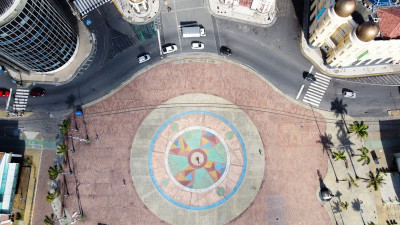
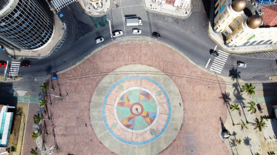

Conheça o Marco Zero em Recife e toda sua importância histórica
O Marco Zero no Recife Antigo é um dos pontos turísticos mais importantes para quem deseja conhecer a capital de Pernambuco. Isso porque é um local de importância histórica que conta o nascimento da cidade e possui forte referência cultural. Além disso, o Marco Zero recebe, anualmente, diversas comemorações e manifestações e também é um lugar muito famoso para quem busca eventos como o Carnaval. Por isso, o Assistente de Viagem preparou esse artigo exclusivo para contar tudo sobre o Marco Zero no Recife Antigo e quais as melhores dicas para conhecer por lá. Separe já o seu seguro viagem nacional e embarque conosco neste roteiro! Boa leitura!
 

A Historia do Marco Zero no Recife Antigo
O Marco Zero no Recife Antigo é o lugar de referência onde a cidade nasceu e todas as medidas oficiais de distâncias rodoviárias usam como ponto de partida. Seu nome é, na verdade, Praça Rio Branco e fica ao lado do Porto de Pernambuco. Pode-se dizer que ele se situa no centro histórico da cidade, que é mais conhecido como Recife Antigo por ser a parte onde se iniciou o povoamento da capital pernambucana. A popularização do nome Marco Zero aconteceu desde 1938, devido à instalação do símbolo geográfico na parte central da praça. Ele foi uma doação do Automóvel Clube de Pernambuco. Além disso, há nela uma estátua de bronze de 2,80 metros, de autoria do escultor francês Félix Charpentier.